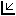

| Top |
BdkCursor *
bdk_cursor_new (BdkCursorType cursor_type);
Creates a new cursor from the set of builtin cursors for the default display.
See bdk_cursor_new_for_display().
To make the cursor invisible, use BDK_BLANK_CURSOR.
BdkCursor * bdk_cursor_new_from_pixmap (BdkPixmap *source,BdkPixmap *mask,const BdkColor *fg,const BdkColor *bg,gint x,gint y);
Creates a new cursor from a given pixmap and mask. Both the pixmap and mask must have a depth of 1 (i.e. each pixel has only 2 values - on or off). The standard cursor size is 16 by 16 pixels. You can create a bitmap from inline data as in the below example.
Example 3. Creating a custom cursor
1 2 3 4 5 6 7 8 9 10 11 12 13 14 15 16 17 18 19 20 21 22 23 24 25 26 27 28 29 30 31 |
/* This data is in X bitmap format, and can be created with the 'bitmap' utility. */ #define cursor1_width 16 #define cursor1_height 16 static unsigned char cursor1_bits[] = { 0x80, 0x01, 0x40, 0x02, 0x20, 0x04, 0x10, 0x08, 0x08, 0x10, 0x04, 0x20, 0x82, 0x41, 0x41, 0x82, 0x41, 0x82, 0x82, 0x41, 0x04, 0x20, 0x08, 0x10, 0x10, 0x08, 0x20, 0x04, 0x40, 0x02, 0x80, 0x01}; static unsigned char cursor1mask_bits[] = { 0x80, 0x01, 0xc0, 0x03, 0x60, 0x06, 0x30, 0x0c, 0x18, 0x18, 0x8c, 0x31, 0xc6, 0x63, 0x63, 0xc6, 0x63, 0xc6, 0xc6, 0x63, 0x8c, 0x31, 0x18, 0x18, 0x30, 0x0c, 0x60, 0x06, 0xc0, 0x03, 0x80, 0x01}; BdkCursor *cursor; BdkPixmap *source, *mask; BdkColor fg = { 0, 65535, 0, 0 }; /* Red. */ BdkColor bg = { 0, 0, 0, 65535 }; /* Blue. */ source = bdk_bitmap_create_from_data (NULL, cursor1_bits, cursor1_width, cursor1_height); mask = bdk_bitmap_create_from_data (NULL, cursor1mask_bits, cursor1_width, cursor1_height); cursor = bdk_cursor_new_from_pixmap (source, mask, &fg, &bg, 8, 8); g_object_unref (source); g_object_unref (mask); bdk_window_set_cursor (widget->window, cursor); |
source |
the pixmap specifying the cursor. |
|
mask |
the pixmap specifying the mask, which must be the same size as
|
|
fg |
the foreground color, used for the bits in the source which are 1. The color does not have to be allocated first. |
|
bg |
the background color, used for the bits in the source which are 0. The color does not have to be allocated first. |
|
x |
the horizontal offset of the 'hotspot' of the cursor. |
|
y |
the vertical offset of the 'hotspot' of the cursor. |
BdkCursor * bdk_cursor_new_from_pixbuf (BdkDisplay *display,BdkPixbuf *pixbuf,gint x,gint y);
Creates a new cursor from a pixbuf.
Not all BDK backends support RGBA cursors. If they are not
supported, a monochrome approximation will be displayed.
The functions bdk_display_supports_cursor_alpha() and
bdk_display_supports_cursor_color() can be used to determine
whether RGBA cursors are supported;
bdk_display_get_default_cursor_size() and
bdk_display_get_maximal_cursor_size() give information about
cursor sizes.
If x
or y
are -1, the pixbuf must have
options named "x_hot" and "y_hot", resp., containing
integer values between 0 and the width resp. height of
the pixbuf. (Since: 3.0)
On the X backend, support for RGBA cursors requires a sufficently new version of the X Render extension.
display |
the BdkDisplay for which the cursor will be created |
|
pixbuf |
the BdkPixbuf containing the cursor image |
|
x |
the horizontal offset of the 'hotspot' of the cursor. |
|
y |
the vertical offset of the 'hotspot' of the cursor. |
Since: 2.4
BdkCursor * bdk_cursor_new_from_name (BdkDisplay *display,const gchar *name);
Creates a new cursor by looking up name
in the current cursor
theme.
Since: 2.8
BdkCursor * bdk_cursor_new_for_display (BdkDisplay *display,BdkCursorType cursor_type);
Creates a new cursor from the set of builtin cursors. Some useful ones are:
 BDK_RIGHT_PTR (right-facing arrow)
BDK_RIGHT_PTR (right-facing arrow)
 BDK_CROSSHAIR (crosshair)
BDK_CROSSHAIR (crosshair)
 BDK_XTERM (I-beam)
BDK_XTERM (I-beam)
BDK_WATCH (busy)
 BDK_FLEUR (for moving objects)
BDK_FLEUR (for moving objects)
 BDK_HAND1 (a right-pointing hand)
BDK_HAND1 (a right-pointing hand)
BDK_HAND2 (a left-pointing hand)
 BDK_LEFT_SIDE (resize left side)
BDK_LEFT_SIDE (resize left side)
 BDK_RIGHT_SIDE (resize right side)
BDK_RIGHT_SIDE (resize right side)
 BDK_TOP_LEFT_CORNER (resize northwest corner)
BDK_TOP_LEFT_CORNER (resize northwest corner)
 BDK_TOP_RIGHT_CORNER (resize northeast corner)
BDK_TOP_RIGHT_CORNER (resize northeast corner)
 BDK_BOTTOM_LEFT_CORNER (resize southwest corner)
 BDK_BOTTOM_RIGHT_CORNER (resize southeast corner)
BDK_BOTTOM_RIGHT_CORNER (resize southeast corner)
BDK_TOP_SIDE (resize top side)
 BDK_BOTTOM_SIDE (resize bottom side)
BDK_BOTTOM_SIDE (resize bottom side)
 BDK_SB_H_DOUBLE_ARROW (move vertical splitter)
BDK_SB_H_DOUBLE_ARROW (move vertical splitter)
 BDK_SB_V_DOUBLE_ARROW (move horizontal splitter)
BDK_SB_V_DOUBLE_ARROW (move horizontal splitter)
BDK_BLANK_CURSOR (Blank cursor). Since 2.16
Since: 2.2
BdkDisplay *
bdk_cursor_get_display (BdkCursor *cursor);
Returns the display on which the BdkCursor is defined.
Since: 2.2
BdkPixbuf *
bdk_cursor_get_image (BdkCursor *cursor);
Returns a BdkPixbuf with the image used to display the cursor.
Note that depending on the capabilities of the windowing system and
on the cursor, BDK may not be able to obtain the image data. In this
case, NULL is returned.
Since: 2.8
BdkCursorType
bdk_cursor_get_cursor_type (BdkCursor *cursor);
Returns the cursor type for this cursor.
Since: 2.22